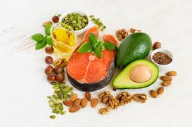

ZAT MAKANAN

Lemak
Lemak tersusun atas unsur-unsur karbon (C), hidrogen (H), dan oksigen (O). Komponen lemak adalah asam lemak dan gliserol. Setiap satu gram lemak menghasilkan 9,3 kalori. Kebutuhan lemak untuk orang dewasa adalah 0,5 – 1 gram/kg.BB/ hari.
Lemak yang kita makan bisa berasal dari hewan disebut lemak hewani atau tumbuhan disebut lemak nabati. Bahan makanan yang mengandung lemak hewan antara lain daging, telur, susu, ikan, keju, dan mentega. Bahan makanan yang mengandung lemak nabati antara lain kelapa, kemiri, alpukat, durian, biji bunga matahari, kacang tanah, dan kacang-kacangan lainnya.
Fungsi lemak adalah:
– Sumber energi.
– Pelarut beberapa vitamin, yaitu vitamin A, D, E, dan K.
– Pelindung terhadap organ dalam tubuh.
– Pelindung tubuh dari suhu rendah.
– Cadangan makanan yang tersimpan di bawah kulit.
– Sebagai komponen bagian sel tertentu, misalnya membran sel